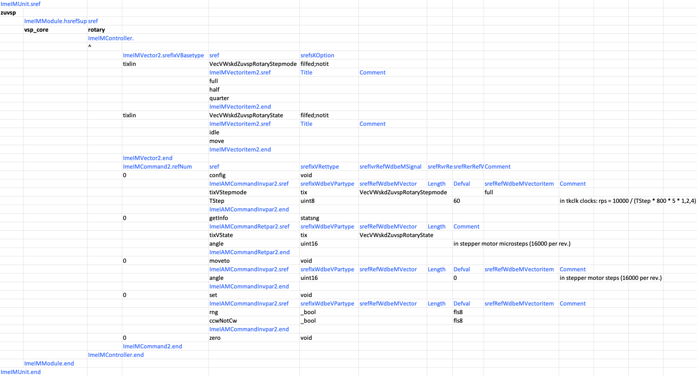
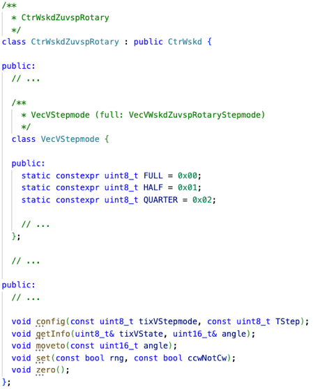
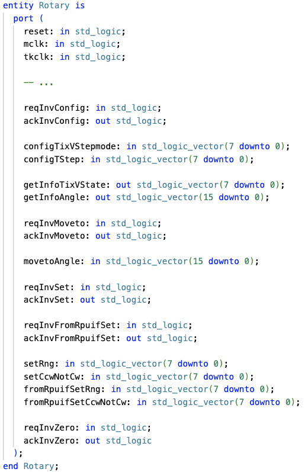
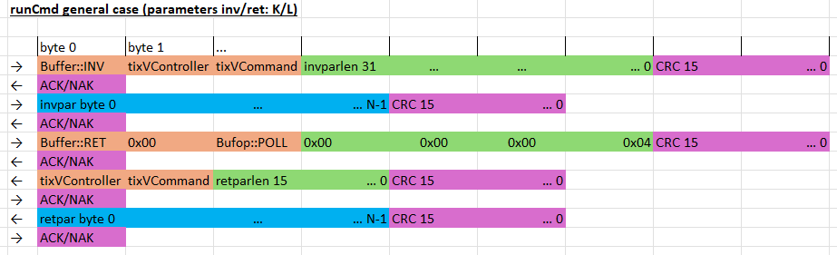
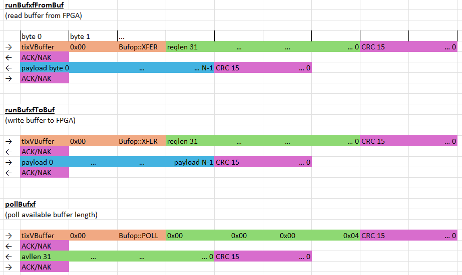
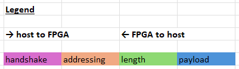

Stepper Motor Control (KB1)
Published: February 11, 2026
Highlights the basic use of FPGA design sub-modules as virtual controllers.
Categories: WhizniumDBE, Whiznium CV Demonstrator
Model and source code file pointers: in [1] _mdl/IexWdbeCsx_wskd.xlsx, ezdevwskd/UntWskdZuvsp/CtrWskdZuvspRotary.h, fpgawskd/zuvsp/{Hostif, Rotary}.vhd
Generating stepper motor pulses of correct period and duty cycle for a turntable positioning task is well-suited for programmable logic, whereas information on the required target angle typically is present in the processing system, either due to algorithmic requirements or from manual UI intervention. Hence, this is a typical example of fabric-based real-time execution with high-level CPU-based control.
The WhizniumDBE implementation starts with declaring the rotary RTL module a virtual controller and then associating commands with it. On the lowest level, this single definition results in matching CPU- and FPGA-side code artefacts to trigger and receive corresponding command invocations, as can be seen in Figure 7. Furthermore, Whiznium can generate interactive terminals for debug purposes, either as standalone command-line executable or as integrated web UI feature, shown on the bottom left of Figure 10.

Figure 1a: IexWdbeCsx model file for rotary controller

Figure 1b: Resulting method in CPU host library

Figure 1c: Resulting method in RTL project
On each command invocation, encoding into byte code, AXIlite communication and decoding on the PL-side are handled in auto-generated code. The byte code format is detailed in Figure 8.

Figure 8a: Interface agnostic, CRC-guarded bytecode for CPU-FPGA command invocation

Figure 8b: CPU-FPGA interaction for buffer transfer

Figure 8c: Legend
Extra: dbeaxilite Linux kernel module
The communication protocol outlined above is interface-agnostic which makes it viable for standalone FPGA’s besides FPGA-SoC’s. The host interface RTL module template hostif_Easy_v1_0 currently is implemented for UART, SPI and AXI4-Lite. Linux host-side for the former two, mainline kernel modules exist which make the FPGA subsystem available for standard read()/write() at familiar paths such as /dev/ttyUSB0 or /dev/spidev0.0, respectively.
For the AXI4-Lite variant, a dedicated out-of-tree character device driver, dbeaxilite, is provided with WhizniumDBE. It is compatible with 32-bit and 64-bit processors (the full data width of which it uses) and in standard mode only takes up four consecutive addresses in the global address space for establishing basic framing of the communication protocol transactions. For highest throughput, two ioctl()’s, … and … are implemented, they help slash the number of system calls from multiple read()/write()’s per transaction to one. This is exemplified in … . A typical device tree snippet is shown in Figure xxx.
The implementation of dbeaxilite largely avoids dynamic memory allocation with the exception of large buffer transfers (not used in the scope of stepper motor control).
A second, experimental, RTL module template hostifmm_Easy_v1_0 is provided for more classical memory-mapped interaction between host and FPGA subsystem, it requires the xxx flag to be specified in the device tree.